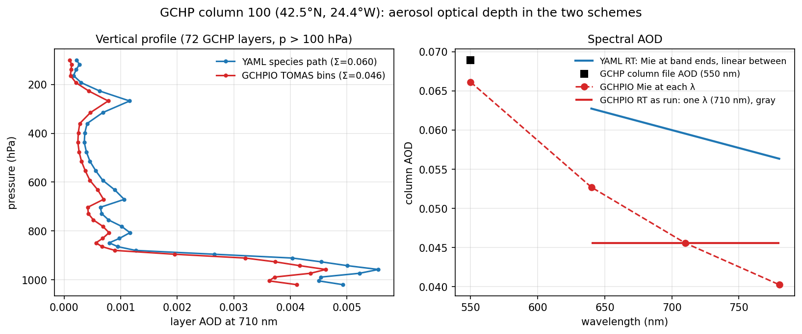
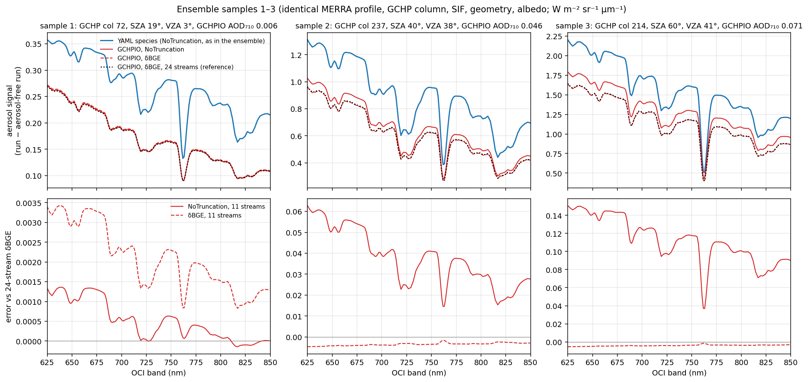

Two ways to turn GCHP aerosols into RT optics
The surrogate TOA spectra take their aerosols from GEOS‑Chem/TOMAS ocean columns. The YAML path in generate_test_spec_lambertian.jl collapses each column into 12 lognormal species. Google‑RT's GCHPIO keeps the TOMAS size bins and computes optics layer by layer. This page summarises how the two schemes differ, what that does to AOD and TOA radiance, and what each one costs.
The core difference: species vs bins
Both schemes read the same GCHP cell (GEOSChem.Custom.20190702_0000z.nc4, TOMAS 15 bins of sulfate, sea salt, organic and black carbon, dust, and aerosol water). They part ways in what reaches Mie theory.
| Step | YAML species path (vSmartMOM) | GCHPIO bin path (Google‑RT) |
|---|---|---|
| Pre‑processing | build_gchp_ocean_columns.py sums TOMAS bins into 12 species (SO4, SALA, SALC, OCPI, BCPI, DUST1–7) and stores layer AOD at 550 nm and wet radius per species | none; reads number, dry mass per component and aerosol water for all 15 bins and 72 layers |
| Size distribution | one lognormal per species: median = column AOD‑weighted wet radius, σ_g fixed in the YAML (1.6, dust 1.8) | within‑bin distribution rebuilt from two moments (number and mass) per bin and layer, with neighbour bins setting the tilt |
| Refractive index | pure component per species (seasalt_sscm, sulfate_suso, …) at λ_ref; no water mixing | volume mix of the components plus water per bin and layer (Maxwell Garnett); hygroscopic growth from the GCHP T and q |
| Vertical structure | one phase function and single‑scattering albedo per species for the whole column; layer AOD shape from the file, remapped | τ, ω̃ and the phase function per layer: humid boundary‑layer particles and dry free‑troposphere particles scatter differently |
| Spectral dependence | Mie at λ_ref (550 nm) and at the two band ends; extinction linear in between; one averaged phase function per band | SURF's build_layer_optics: one λ per band (default 1.57 µm). The band API compute_aerosol_optics_band runs Mie at Chebyshev nodes with a spline in between (7 nodes for 623–850 nm) |
| Normalisation | τ scaled so τ(550) = the file's species AOD, via k_ref; scattering.n_ref is unset, so k_ref uses the first YAML aerosol's RI (1.5−10⁻⁸i) for every species | absolute: τ follows from number, size and RI, with no rescaling |
| RT injection | model_from_parameters / BatchContext: 12 aerosol modes, each spread over all layers | one aerosol mode per active layer (diagonal τ_aer), as in SURF.build_layer_resolved_model |
| Phase truncation | whatever the YAML says; ocean_lambertian_0929.yaml has NoTruncation() (written for a Rayleigh‑only scene) | SURF applies δBGE at 2·nstreams−1; the new pipeline follows the YAML unless AER_TRUNCATION=dbge |
The short version: the YAML path is a species‑based design, where each aerosol type is one fixed‑shape distribution for the whole column. GCHPIO is a bin‑based design that carries the model's size distribution, mixing state and humidity into the optics of every layer.
Example 1: one column, two AODs
GCHP column 100 (42.5°N, 24.4°W, sea‑salt fraction 0.28), with both schemes on the 72 GCHP layers. At 550 nm they agree to 4%, because both are tied to the same TOMAS state. In the red they do not agree. GCHPIO's AOD falls from 0.053 at 640 nm to 0.040 at 780 nm (Ångström ≈ 1.4). The YAML path falls only from 0.063 to 0.056 (Ångström ≈ 0.5). In the middle of the window GCHPIO is 22% lower.

Example 2: matched ensemble samples
generate_test_spec_lambertian_gchpio.jl reproduces the YAML ensemble's design (seed 20260913, N_SAMPLES = 1000), so sample k has the same MERRA profile, GCHP column, SIF, geometry and albedo in both. For samples 1–3 I also ran both pipelines without aerosols. The two vSmartMOM revisions (main 8afe0aec vs GCHPIO's pin 2cd6934) then agree exactly (difference 0.0000), so every difference below comes from the aerosol optics.

| Sample (GCHP column) | GCHPIO AOD 710 | YAML signal | GCHPIO signal (NoTrunc) | GCHPIO signal (δBGE) | NoTrunc error | δBGE error |
|---|---|---|---|---|---|---|
| 1 (col 72, SZA 19°) | 0.006 | 0.287 | 0.187 (−35%) | 0.188 | +0.001 | +0.002 |
| 2 (col 237, SZA 40°) | 0.046 | 0.950 | 0.683 (−28%) | 0.639 | +0.041 | −0.004 |
| 3 (col 214, SZA 60°) | 0.071 | 1.705 | 1.388 (−19%) | 1.260 | +0.124 | −0.004 |
Medians over 640–780 nm, in W m⁻² sr⁻¹ µm⁻¹; the errors are relative to the 24‑stream δBGE reference. Two separate effects show up:
- Optics. With the same truncation, GCHPIO's aerosol signal is 19–35% smaller than the YAML path's, consistent with Figure 1's lower red AOD. That is 0.1–0.3 W m⁻² sr⁻¹ µm⁻¹ of TOA radiance, the same order as ocean SIF.
- Truncation. Running Mie phase functions untruncated at 11 streams overestimates radiance by up to 0.15 (≈ 1%) for aerosol‑rich, sea‑salt‑heavy columns, and the bias is smooth but not flat. δBGE at 11 streams is within 0.005 of the 24‑stream answer and makes the RT about 3× faster. The YAML ensemble was run with NoTruncation, so it probably carries this bias too.
Cost
The YAML path does about 36 single‑distribution Mie calls per column (12 species × 3 λ), which are cheap. GCHPIO does Mie per (bin, layer, node). Deduplication by size and refractive index keeps this manageable, but it is still 10–15× more Mie work per wavelength. In practice:
| Per sample (GPU RT, 16 CPU threads for Mie) | YAML pipeline | GCHPIO pipeline |
|---|---|---|
| Aerosol optics (new column) | Mie inside model update | 22–26 s (7 nodes), cached per column on disk |
| RT, NoTruncation (11 streams) | ≈ 135 s (mean over the 1000‑sample run) | ≈ 85 s |
| RT, δBGE (11 streams) | not run | ≈ 25 s |
| RT, δBGE (24 streams) | not run | ≈ 45 s |
The extra Mie time is paid once per GCHP column (about 430 unique columns in 1000 samples) and is smaller than what δBGE saves in the RT.
The new pipeline
surrogate_meas/full_RT_construction/generate_test_spec_lambertian_gchpio.jl is generate_test_spec_lambertian.jl with the aerosol block replaced:
- Per GCHP column:
scene_aton the cell given byi_face/i_y/i_x(lat/lon checked), thencompute_aerosol_optics_bandon 24 wavelengths spanning the RT grid. Per layer it keeps τ(λ), the band‑mean ω̃ and the τ_sca‑weighted band‑mean Greek coefficients, cached in*_aerosol_optics.jld2. - Per sample: the 72 GCHP layers are mapped onto the MERRA RT layers by log‑pressure overlap, conserving τ layer by layer. ω̃ and Greek are τ_sca‑weighted, and τ(ν) is interpolated linearly in λ.
- The aerosols are injected into the
BatchContextmodel, which already has the gases and Rayleigh: one mode per active layer, with Fourier bounds recomputed. Truncation follows the YAML orAER_TRUNCATION. - Everything else is unchanged: design, OCI convolution, SNR noise and the output layout, plus a new
aodvariable (band, sample). Same seed and N_SAMPLES give the same samples as the YAML ensemble; the noise realisation differs (something in the GCHPIO path draws from the global RNG).